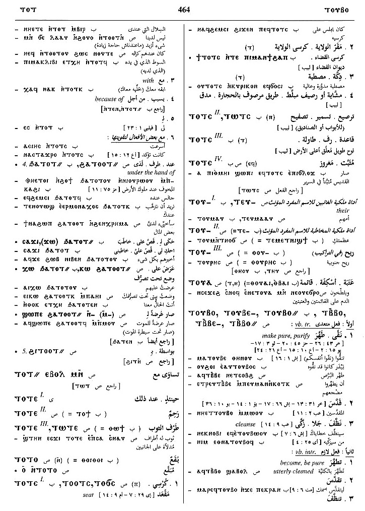

(verb)
intr: become, be pure (causative of ⲟⲩⲟⲡ) [καθαροσ
ειναι, καθαριζεσθαι, καθαιρεσθαι]
qual: [καθαροσ]
tr: make pure, purify [καθαριζειν]
qual: [καθαροσ]
tr: make pure, purify [καθαριζειν]
(S)
ⲧⲃⲃⲟ
(A) ⲧⲃⲟⲩⲟ
(sA, B) ⲧⲟⲩⲃⲟ
(F) ⲧⲉⲃ(ⲃ)ⲟ, ⲧⲉⲃ(ⲃ)ⲁ, ⲧⲟⲩⲃⲁ
(S) ⲧⲃⲃⲉ-
(B) ⲧⲟⲩⲃⲉ-
(F) ⲧⲩⲃⲃⲁ-
(S) ⲧⲃⲃⲟ=
(A) ⲧⲃⲟⲩⲁ=
(sA) ⲧⲟⲩⲃⲁ=
(B) ⲧⲟⲩⲃⲟ=
(S) ⲧⲃⲃⲏⲩ+
(A) ⲧⲃⲃⲟⲩⲁⲉⲓⲧ+
(sA) ⲧⲟⲩⲃⲁ(ⲉ)ⲓⲧ+, ⲧⲟⲩⲃⲏⲩ+
(B) ⲧⲟⲩⲃⲏⲟⲩⲧ+
(F) ⲧⲉⲃⲏⲟⲩⲧ+, ⲧⲩⲃⲃⲏⲟⲩⲧ+, ⲧⲉⲃⲏⲩ+
(A) ⲧⲃⲟⲩⲟ
(sA, B) ⲧⲟⲩⲃⲟ
(F) ⲧⲉⲃ(ⲃ)ⲟ, ⲧⲉⲃ(ⲃ)ⲁ, ⲧⲟⲩⲃⲁ
(S) ⲧⲃⲃⲉ-
(B) ⲧⲟⲩⲃⲉ-
(F) ⲧⲩⲃⲃⲁ-
(S) ⲧⲃⲃⲟ=
(A) ⲧⲃⲟⲩⲁ=
(sA) ⲧⲟⲩⲃⲁ=
(B) ⲧⲟⲩⲃⲟ=
(S) ⲧⲃⲃⲏⲩ+
(A) ⲧⲃⲃⲟⲩⲁⲉⲓⲧ+
(sA) ⲧⲟⲩⲃⲁ(ⲉ)ⲓⲧ+, ⲧⲟⲩⲃⲏⲩ+
(B) ⲧⲟⲩⲃⲏⲟⲩⲧ+
(F) ⲧⲉⲃⲏⲟⲩⲧ+, ⲧⲩⲃⲃⲏⲟⲩⲧ+, ⲧⲉⲃⲏⲩ+
| With following preposition:4827 | Crum: 399b | ||||||||
| (S, B) ― ⲉ- | pure from
― intr: ― tr: ―― ―― for4828 |
||||||||
| (S, B) ― ⲛ- | cleanse, be pure for4829 | Crum: 400a | |||||||
| (B) ― ϩⲁ- | from4830 | ||||||||
| (S, A, B, F) ― ϩⲛ-, ― ϧⲉⲛ- | by agent4831 | ||||||||
| (S, A, B, F) ⲉⲃⲟⲗ ϩⲛ- (c) | be pure from6510 | ||||||||
| (S, A, B, F) ϩⲣⲁⲓ ϩⲛ-, ⲉϧⲣⲁⲓ ϧⲉⲛ- (c) | 6511 | ||||||||
| With following adverb:4832 | |||||||||
| (S) ⲉⲃⲟⲗ (c) | emphatic of ⲧ.6512 | ||||||||
| (S, A, sA, B, F) ― (ⲡ) | (noun male)
purity, purification [καθαριοτησ]2189 |
||||||||
| (B) ⲁⲧⲧ. | impure [ανοσιοσ]2190 | ||||||||
| (S, sA, B, F) ⲙⲁ ⲛⲧ. | place of purifying [αγιαστηριον]2191 | ||||||||
| (B) ⲙⲉⲧⲧ. | purity2192 | ||||||||
| (S, B) ϭⲓⲛⲧ., ϫⲓⲛⲧ. | purification2193 | ||||||||
See also:
| view | (S) ⲟⲩⲟⲡ (A) ⲟⲩⲁⲡ (S, sA) ⲟⲩⲁⲁⲃ+ (A) ⲟⲩⲁⲁⲃⲉ+ (A, sA) ⲟⲩⲁⲃⲉ+ (B) ⲟⲩⲁⲃ+ (F) ⲟⲩⲉ(ⲉ)ⲃ+, ⲟⲩⲉϥ+, ⲟⲩⲏⲏⲃ+ | (verb) intr: be pure,
innocent [οσιουσθαι, αγιαζεσθαι]
as nn m, purity [οσιοτησ, αγιοτησ] qual: pure, holy [καθαροσ, αμιαντοσ, οσιοσ]381 |
| view | (S, B) ⲥⲱⲧϥ (F) ⲥⲱⲃⲧ (S, B, F) ⲥⲉⲧϥ- (S) ⲥⲱⲧϥ- (S) ⲥⲟⲧϥ= (S, B) ⲥⲟⲧϥ+ (A, sA) ⲥⲁⲧϥ+ | (verb) intr: be pure, clear,
purified [καθαροσ]
tr: ― purify, strain (?) ― cause to drip, pour1506 |
Crum: 399,400

399

400
Dawoud: 464b-465b

464

465